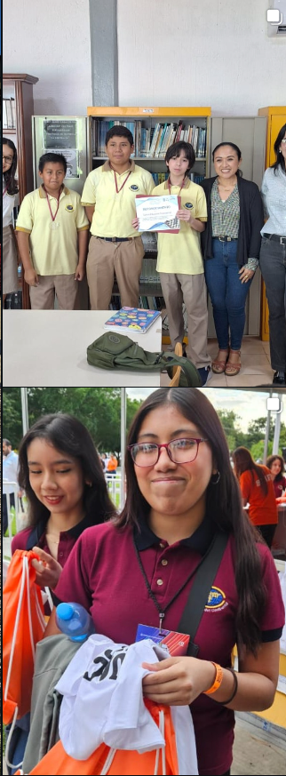

No se pudo actualizar la información. Puedes recargar la página o consultar los datos de contacto al final.
De preescolar a preparatoria, en Ciudad del Carmen.
Conoce las etapas educativas de Colegio Continental 2000 y prepara una visita para resolver tus dudas con la institución.
Agendar visita por WhatsAppConsulta la vista previa de la solicitud. Agenda aún no habilitada.

Colegio
Continental 2000.
Preescolar, primaria, secundaria y preparatoria. Consulta la etapa que te interesa y reúne tus preguntas antes de solicitar una visita.
Explorar las etapas escolaresUna escuela para cada etapa.
Preescolar, primaria, secundaria y preparatoria
Oferta reportada para la propuesta. Programas y requisitos pendientes de confirmación.
Agenda una visita a Continental 2000.
Indica la etapa que te interesa y prepara tus preguntas. El colegio podrá confirmar disponibilidad, fecha y horario de atención.
Esta es una propuesta de sitio web. Las visitas por WhatsApp estarán disponibles cuando el colegio confirme su número.
Encuéntranos en Ciudad del Carmen.
Av. Amado Nervo #4, San Manuel / El Potrero, C.P. 24154
Dirección y horario pendientes de validación. Nombre, teléfono y correo proporcionados por el usuario.
- Horario de atención reportado
- Lunes a viernes, de 7:00 a 16:00
- Teléfono reportado
- 938 384 1120
- Correo reportado
- conta@colegiocontinental.com.mx